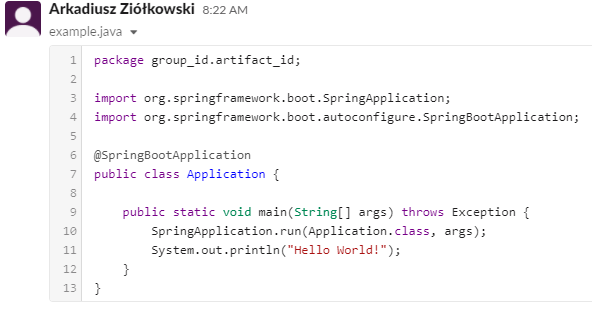

Przygotowanie do zajęć
Dołączenie do Slacka
Aby dołączyć do slacka skorzstaj z linku: https://join.slack.com/t/io20222023/shared_invite/zt-1qhtfbmci-WBfrgBCRTOH3KYRrAaw2cQ
Zarejestruj się używając maila studenckiego
Podczas dołączania jako “Full name” wpisz swoje imię i nazwisko
Nie wszystkie kanały są domyślnie subskrybowane. Na obzaku poniżej kanał “laboratorium” jest wyszarzony. Oznacza to, że powiadomienia o wiadomościach z tego kanału nie będą przesyłane.
Aby subskrybować kanał należy na niego kliknąć a następnie nacisnąć chyba zielony przycisk “Join channel” (obrazek poniżej).
{kind=link}
{kind=link}
Note
Każdy student powinien (w domyśle - musi) zasubskrybować kanał laboratorium.
Gdy chcesz kogoś wspomnieć użyj znaku “@” i wybierz osobę/kanał.
Zawsze gdy chcesz wkleić fragment kodu na slacka użyj opcji “Create a text snippet”. Znajdziesz ją klikając skróty (symbol pioruna) w oknie tworzenia wiadomości:
{kind=link}
W okno “Content” wklej fragment kodu. Możesz nadać nazwę pliku w polu “Title”.
{kind=link}
Poniżej przedstawiono jak wygląda prawidłowo wklejony kod. Jeżeli kod nie został pokolorowany powtórz powyższe czynności z wyszukaniem wprowadzanego języka programownia w polu “Type”.
Note
Slack w godzinach nocnych proponuje żeby nie wysyłać powiadomieć do innych użytkowników. Zawsze gdy taka propozycja się pojawi względem prowadzącego to kliknij żeby mimo wszystko powiadomienie zostało wysłane. Zmniejszy to prawdopodobieńśtwo przeoczenia wiadomości przez prowadzącego.
{kind=link}
IDE
Do pisania programów Javie, podczas zajęc można korzystać ze środowiska InteliJ lub Visual Studio Code.
W celu zainstalowania InteliJ należy zgłosić się po licencję dla InteliJ Ultimate https://www.jetbrains.com/community/education/#students (rekomendowane) lub zainstalować wersję Community. Instalatory są dostępne pod adresem: https://www.jetbrains.com/idea/download/#section=windows
W przypadku chęci korzystania z VSCode należy je pobrać ze strony: https://code.visualstudio.com/download oraz zainstalować niezbędne pluginy: https://code.visualstudio.com/docs/java/java-spring-boot
Linux - dla chętnych
Pełna instrukcja przygotowania maszyny wirtualnej z linuxem znajduje się pod adresem: https://drive.google.com/file/d/1Q8_Pot5Fba1uyfZpH0y0ui0wsvbfiWGo/view?usp=sharing